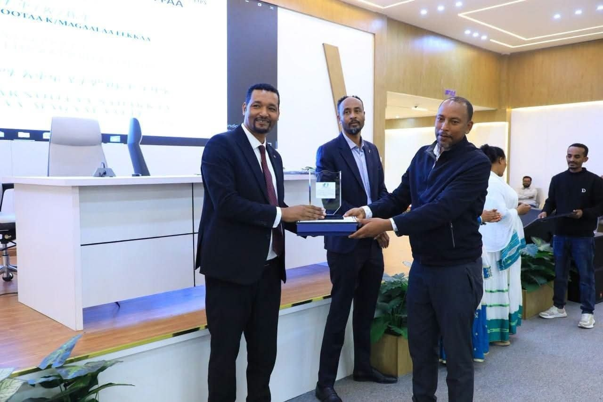
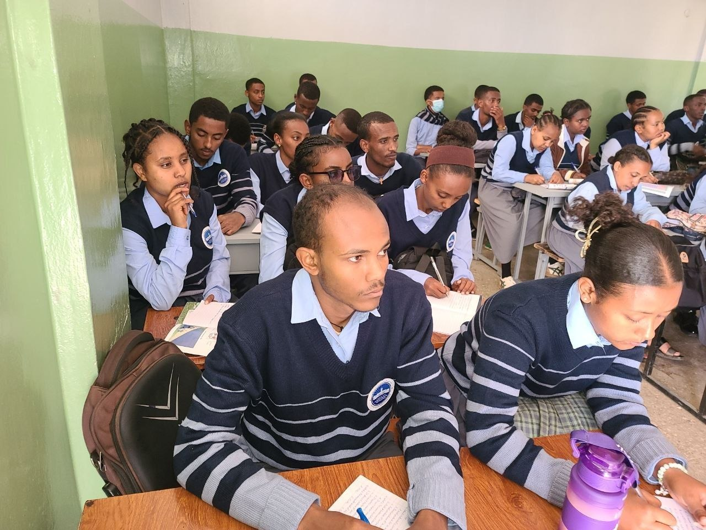
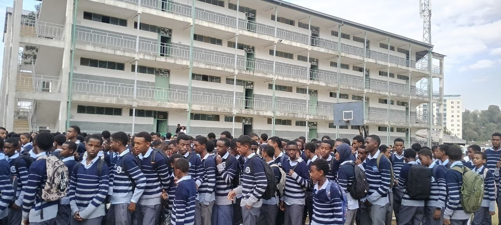
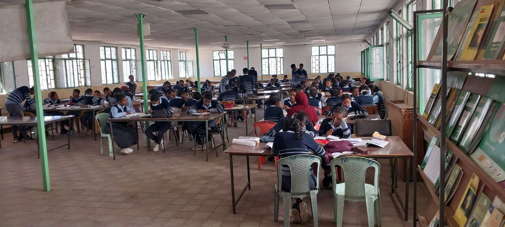

Nurturing intellectual rigor, moral integrity, and academic discipline across Grades 9 through 12 in Addis Ababa.

Established in 1954 E.C. in Yeka Sub-City, Kokebe Tsibah Secondary & Preparatory School has stood as a hallmark of public scholastic distinction. We prepare ambitious students for university admissions and lifelong civic impact through dedicated mentorship and academic focus.
A glimpse into daily academic rigor, practical experiments, and community traditions.

Hands-on practical experiments in chemistry and physics.

Student gatherings, flag ceremonies, and academic celebrations.

Dedicated quiet study areas and matriculation reference archives.
Find answers to common questions about admissions, academics, and school life at Kokebe Tsibah.
For admissions, transcripts, or campus inquiries, reach out to our administrative team.